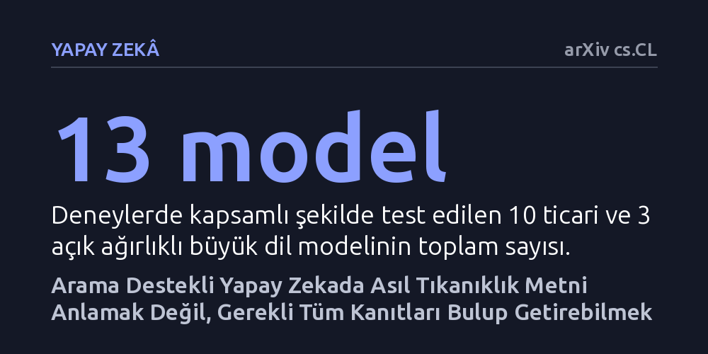

YAPAY-ZEKA · arXiv cs.CL · 2026-10-22
Araştırmacılar, arama destekli üretim mimarisinin uzun metinlerdeki hatalarının okuma kapasitesinden mi yoksa bilgi getirme aşamasından mı kaynaklandığını 13 dil modelinde inceledi. Bulgular, asıl darboğazın metni anlamak değil; benzerlik aramasının gereken tüm kanıtları toplayamaması ve parçalamanın belge bağlamını koparması olduğunu gösterdi.
Uzun belgelerle çalışan yapay zeka sistemlerinde hataları önlemek için modellerin okuma kapasitesini büyütmek yerine, parçalanmış verileri doğru bulan arama yöntemlerini iyileştirmek gerektiğini gösteriyor.

Büyük dil modelleri devasa belgeleri doğrudan işleyebilme kapasitesine kavuşsa da kurumsal uygulamalarda hâlâ en yaygın yöntem arama destekli üretimdir (RAG). Bu mimaride uzun belgeler küçük parçalara bölünür; kullanıcı bir soru sorduğunda ise arama algoritması soruyla en yüksek anlamsal benzerlik gösteren birkaç parçayı seçip modelin önüne koyar. Ancak bu düzenek, cevabı tek bir paragrafta bulunmayan ve birden fazla belgenin birleştirilmesini gerektiren karmaşık sorularda sık sık hatalı veya eksik sonuçlar üretir.
Uzun süredir bu tür hataların, modellerin kendilerine verilen uzun metinleri dikkatle okuyup muhakeme edememesinden kaynaklandığı düşünülüyordu. Bu araştırma, yaygın kanının aksine asıl problemin anlama kapasitesinde değil, bilgi getirme ve metin parçalama adımlarının doğasındaki yapısal kör noktalarda yattığını savunuyor.
Araştırmacılar, modellerin ezberden ya da tesadüfen doğru cevabı tutturmasını engellemek için "kanıta dayalı üretim" yaklaşımını benimsedi. Bu yaklaşımda modellerden yalnızca soruya yanıt vermeleri değil, yanıtı metnin hangi satırına dayandırdıklarını kesin alıntılarla kanıtlamaları istendi; böylece hem yanıtın doğruluğu hem de dayanağın geçerliliği eş zamanlı olarak puanlandı.
Deneyler için sektörün önde gelen 10 ticari öncü modeli ve 3 açık ağırlıklı modeli seçildi. Modeller; 10 bin ile 1 milyon karakter arasında değişen sentetik samanlık metinlerinde gizlenen birden fazla kanıtı bulma testlerine ve gerçek akademik makalelerden derlenen çok adımlı soru-cevap veri setlerine tabi tutuldu.
Elde edilen sonuçlar iki belirgin aksaklığı gün yüzüne çıkardı. Birincisi, benzerlik temelli arama mekanizmaları tek bir ilgili metin parçasını yakalamada oldukça başarılıyken, birden fazla parçanın bir araya getirilmesini gerektiren çok adımlı sorularda gereken kanıtların tamamını eksiksiz getirmekte ciddi şekilde zorlanıyor.
İkinci sorun ise metinlerin parçalara bölünmesi sürecinden kaynaklanıyor. Belgeler küçük bloklara ayrıldığında, paragraflar arası göndermeler ve özne bağları kopuyor; bu da sistemin hangi bilginin kime ait olduğunu çözmesini imkansızlaştırıyor. Oysa aynı belgeler parçalanmadan doğrudan uzun bağlamlı modellere sunulduğunda, modellerin bu bağlantıları sorunsuzca kurabildiği ve doğru yanıta ulaştığı gözlemlendi.
Bu çalışma, dil modellerinin bağlam pencerelerini tek başına büyütmenin veya modelleri daha büyük parametrelerle eğitmenin RAG tabanlı hataları sihirli bir şekilde çözmeyeceğini netleştiriyor. Yapay zeka ne kadar yetenekli olursa olsun, arama katmanı gereken parçaları masaya getiremediğinde veya bağlamı parçalayıp kopardığında doğru çıkarım yapılamıyor.
Gelecekte daha güvenilir ve doğrulanabilir bilgi sistemleri inşa edebilmek için modellerin yalnızca nihai cevaplarına değil satır düzeyindeki kanıtlarına odaklanılması, aynı zamanda belge bütünlüğünü ve üst verilerini koruyan yeni nesil arama algoritmalarının geliştirilmesi gerekiyor.